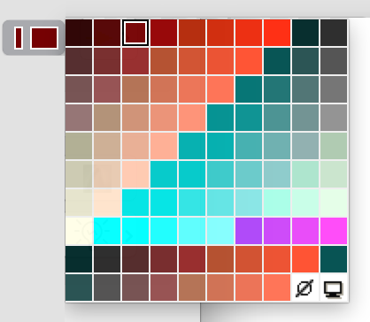

User Control
Sometimes an application may need such special user interactions that can not be elegantly achieved by any controls provided by DG. In such special cases you can develop your own controls that perfectly satisfy all requirements. These types of controls are called "user controls" in DG.
For example, suppose that the user must choose a specific color from a predefined palette of colors in a dialog. This task can be solved either by a list box or by a pop-up control, but the following user control may be the best solution. When the user presses the button-like control that displays the currently selected color, a pop-up palette appears from which the user can choose the new color by keypresses or by a mouse click.
-

A user control has a range and a current value. The range is the set of continuous values that the control can represent. Because these values are expressed as short integers, the possible minimum and maximum values are SHRT_MIN and SHRT_MAX, respectively. User controls can send only three types of DG messages (see Messages) and there is only one function pair that serves to set or retrieve control specific data of user controls.
User controls can be easily integrated into DG. They can be created both from GRC or from program code by DGAppendDialogItem. When you write a user control you must keep only a few rules (see Remarks).
Item type
- DG_ITM_USERCONTROL
GRC Specification
UserControl x y dx dy cdefID
[data1 ... datai ... datan]
where x and y are the pixel coordinates of the upper left corner of the user control, dx and dy are the width and height of the control in pixels. cdefID is the control definition procedure ID (it must be within the range of 512 <= ldefID <= 999). The optional datai (1 <= i <= n) short parameters may initialize the user control (n can be zero). These parameters can be given both in decimal or hexadecimal formats and they can be written in more lines.
Messages
-
Message Meaning DG_MSG_CHANGE The value of the user control is changed. The message data parameter contains the previous value. DG_MSG_DOUBLECLICK The user control is double clicked. The message data parameter is always zero. DG_MSG_TRACK The value of the user control is changed during tracking. The message data parameter is the sub-message.
Modification Flag
DGSetItemValLong, DGSetItemMinLong and DGSetItemMaxLong functions can set the user control's modification flag except if they are called when handling the DG_MSG_INIT message in the dialog callback function. The flag can also be set by user actions that generate DG_MSG_CHANGE or DG_MSG_TRACK messages. Use DGModified or DGResetModified to retrieve or reset (clear) the state of the modification flag.
Remarks
The value and range of a user control can be initialized by the datai parameters in GRC. Later you can dynamically alter the range by using the DGSetItemMinLong and DGSetItemMaxLong functions. The possible minimum of the range is SHRT_MIN while the maximum is SHRT_MAX. Use DGGetItemMinLong and DGGetItemMaxLong to retrieve the range of a user control. The current value of the user control can be set and retrieved by DGSetItemValLong and DGGetItemValLong, respectively.
If any of the range or value setting functions is called, DG checks the consistency of data (i.e. whether the minimum <= value <= maximum condition is true or not). If data are inconsistent, DG automatically adjusts them. For the details of this adjustment see DGSetItemValLong, DGSetItemMinLong and DGSetItemMaxLong.
Besides the value and range a user control can have a block of data describing - among others - the visual appearance and the behavior of the control. Moreover, the application can store any other information in this block. These control specific data can be initialized from GRC and can be accessed from program code by the DGSetItemData and DGGetItemData functions. However these functions are obsolote from version DGLib 2.2.0. on, because the predeclared user controls in the UC module all controls have their own interface for changing their settings.
As a result of user actions a user control can send three types of DG messages, however it does not need to support all of the three messages. It depends on the nature of the control which messages are supported by it. If a user control supports tracking and the user clicks and tracks the control DG sends DG_MSG_TRACK messages to the dialog callback function until the user releases the (left) mouse button. With DG_MSG_TRACK message, a sub-message will be delivered also, which specifies the user control event more detailed. This allows the application to modify other controls during tracking. When handling DG_MSG_TRACK messages call DGGetItemValLong to retrieve the current value of the control. As soon as tracking is finished the callback function receives a DG_MSG_CHANGE message; the message data parameter is the control value before tracking.
For user controls many tasks are handled internally by DG (show, hide, size, move, etc.). However, many other tasks (updating, drawing, handling user actions, etc.) must be implemented by the control itself.
 Macintosh only:
Macintosh only:
On Macintosh, if you need a user control, write a standard control definition procedure and place it into the application's resource fork. The CDEF resource must have the index given by the cdefID parameter of GRC, or the itemData parameter of DGAppendDialogItem. The control must support the following Macintosh API function calls: SetControlValue, GetControlValue, SetControlMinimum, GetControlMinimum, SetControlMaximum, GetControlMaximum, SetControlData and GetControlData. (See Macintosh API documentation for details.)
 Windows only:
Windows only:
On Windows, the situation is a bit more complicated. First the application has to register an own window class with the name of "CDEFXXX", where "XXX" represents the three numeric digits of the control definition procedure ID. In order to communicate with DG, a user control has to respond to some DG specific control messages in its window procedure. These messages, their parameters, return values and the functions from which DG sends them are summarized in the following table.
-
Message wParam lParam Return value Function DG_CM_SETMIN 1 control minimum not used DGSetItemMinLong DG_CM_GETMIN 0 0 control minimum DGGetItemMinLong DG_CM_SETMAX 1 control maximum not used DGGetItemMaxLong DG_CM_GETMAX 0 0 control maximum DGGetItemMaxLong DG_CM_SETVAL 1 control value not used DGSetItemValLong DG_CM_GETVAL 0 0 control value DGGetItemValLong DG_CM_SETDATA size of data block
in bytespointer to data block
(can not be nullptr)-1 if error occurs,
zero otherwiseDGSetItemData DG_CM_GETDATA size of data block
in bytespointer to data block
(can be nullptr)size of the whole
control data in bytesDGGetItemData
Notes on DG_CM_SETDATA message:
- If wParam is larger than the current size of the control's data block, the control should increase its memory block to make room for the new data.
- If wParam is smaller than the current size of the control's data block, the control should update only the first wParam bytes in its data block.
- The control has to return -1 if an error occurs, and zero otherwise.
Notes on DG_CM_GETDATA message:
- If lParam is not zero and wParam is smaller than the current size of the control's data block, the control should copy only the first wParam bytes to the lParam buffer.
- If lParam is zero, the control has to return the size of its data block.
When the current value of a user control is changed by a user action, the control should send DG specific notification messages to its parent dialog using the SendMessage Windows API function. DG translates these notifications into standard DG messages then sends them to the dialog callback function. The following table contains the notification messages, their parameters and the corresponding DG messages:
-
Notification wParam lParam DG message DG_CN_CHANGE 1-based index of the control previous value of the control DG_MSG_CHANGE DG_CN_TRACK 1-based index of the control not used DG_MSG_TRACK
If a user control supports tracking and the user clicks and tracks the control, DG_CN_TRACK notification messages should be sent to the parent dialog until the user releases the (left) mouse button. If tracking is finished and the current value of the control differs from its value before tracking, the control should send a DG_CN_CHANGE notification, too.
Besides the DG specific control messages any message can be handled in the control's window procedure. Not handled messages have to be passed to the default window procedure.
Requirements
- Version: DG 2.0.0 or later
- Header: DG.h
See Also
Dialog item types, List Box, Pop-up Control
DGAppendDialogItem, DGGetItemData, DGGetItemMaxLong, DGGetItemMinLong, DGGetItemValLong, DGModified, DGResetModified, DGSetItemData, DGSetItemMaxLong, DGSetItemMinLong, DGSetItemValLong, Callback functions
DG Messages, DG_MSG_CHANGE, DG_MSG_DOUBLECLICK, DG_MSG_INIT, DG_MSG_TRACK